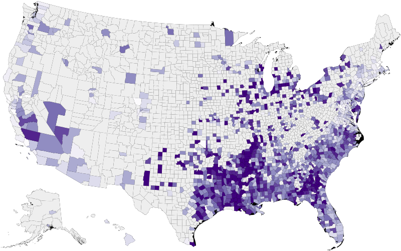
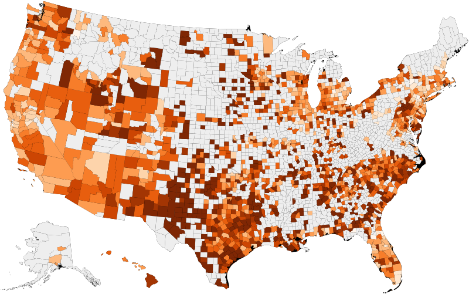
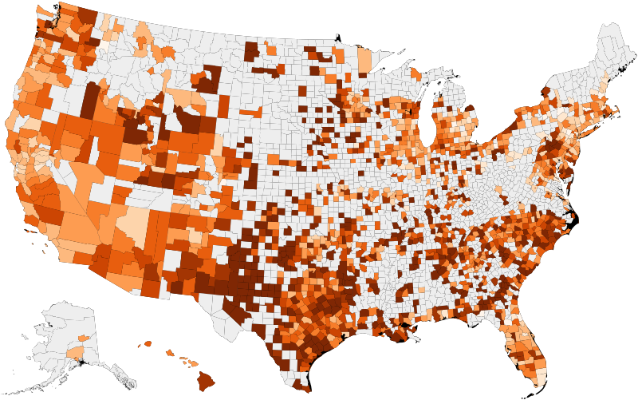
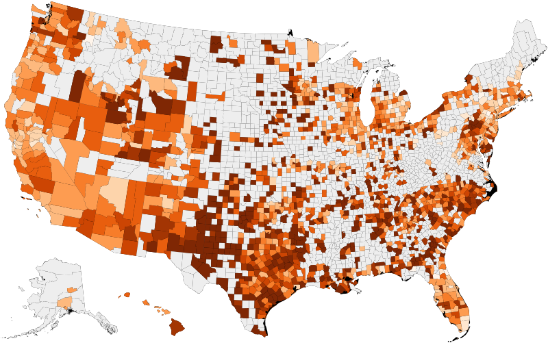

Teen Birth Rate: Black
Teen Birth Rate: Hispanic
 

Data: County Health Rankings at countyhealthrankings.org by the University of Wisconsin
The CDC recently reported that the teen birth rate in the United States, defined as the number of births per 1000 female population aged 15-19, continues to fall to record lows. They believe this may stem from a combination of greater use of birth control as well as lower rates of sexual activity among teens. Policymakers and social scientists have celebrated this trend, as teen pregnancy contributes to school dropout for parents and poor socioeconomic and educational outcome for children. However, patterns of teen births in the US present a study in inequalities.
The map of teen birth rate as a whole reveals geographic disparities, with significantly higher birth rates concentrated in the South with some outlier counties in Western states. Where available (greyed out counties indicate unavailable data), data disaggregated by race paints an even clearer picture. Black youth face high teen birth rates in parts of the South as well as urban centers in the Midwest, while the rates for Hispanic youth are highest across the country. As teen pregnancy declines, one might expect the rate of children born with low birthweights to follow suit; however, the rate has remained stagnant, as risk is highest among teen mothers and mothers aged 40+.

Although it is not a 1:1 comparison, we note that teen birth rate maps closely to rates of childhood poverty, which in turn maps in reverse to high school completion and college attendance. Finally, while unemployment trends appear disconnected from the other metrics, we may note that many states see significant outmigration following K-12 completion.
America should not congratulate itself on a declining teen birth rate until all socioeconomic and racial/ethnic groups are able to achieve lower rates. Low-quality schooling, lack of economic opportunity, unsafe neighborhood conditions, and inaccessible or unaffordable reproductive health care are all associated with higher rates of teen birth. Any nation that will not improve these conditions for all of its residents is a failing nation. Voters and policymakers can make a choice now to invest in breaking down these disparities, or allow the status quo to prevail; the choice is ours.
Maps by Nicholas Pierson, 2021